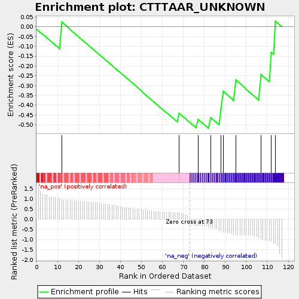
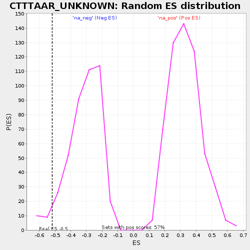

| | | Dataset | selected_gsea_35 |
| Phenotype | NoPhenotypeAvailable |
| Upregulated in class | na_neg |
| GeneSet | CTTTAAR_UNKNOWN |
| Enrichment Score (ES) | -0.5184765 |
| Normalized Enrichment Score (NES) | -1.6535187 |
| Nominal p-value | 0.043879908 |
| FDR q-value | 0.7682357 |
| FWER p-Value | 1.0 |
Table: GSEA Results Summary

Fig 1: Enrichment plot: CTTTAAR_UNKNOWN
Profile of the Running ES Score & Positions of GeneSet Members on the Rank Ordered List
| PROBE | GENE SYMBOL | GENE_TITLE | RANK IN GENE LIST | RANK METRIC SCORE | RUNNING ES | CORE ENRICHMENT | | 1 | ABCB1 | | | 12 | 0.983 | 0.0247 | No |
| 2 | NAMPT | | | 68 | 0.315 | -0.4410 | No |
| 3 | POU2F1 | | | 77 | -0.311 | -0.4722 | Yes |
| 4 | SLC25A23 | | | 83 | -0.408 | -0.4622 | Yes |
| 5 | CUX1 | | | 88 | -0.584 | -0.4185 | Yes |
| 6 | STAG3 | | | 89 | -0.642 | -0.3299 | Yes |
| 7 | FES | | | 95 | -0.755 | -0.2718 | Yes |
| 8 | ITGA3 | | | 107 | -0.941 | -0.2437 | Yes |
| 9 | CAMK4 | | | 112 | -1.094 | -0.1296 | Yes |
| 10 | LMCD1 | | | 114 | -1.206 | 0.0278 | Yes |
Table: GSEA details [plain text format]

Fig 2: CTTTAAR_UNKNOWN: Random ES distribution
Gene set null distribution of ES for CTTTAAR_UNKNOWN